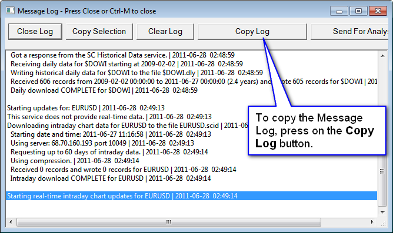
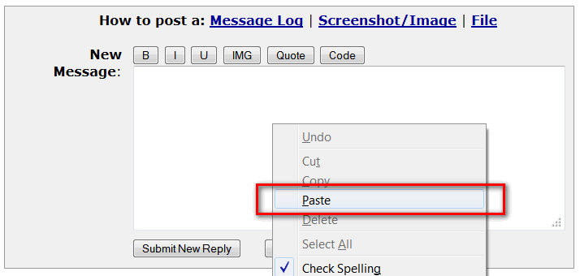
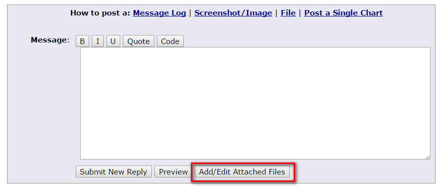
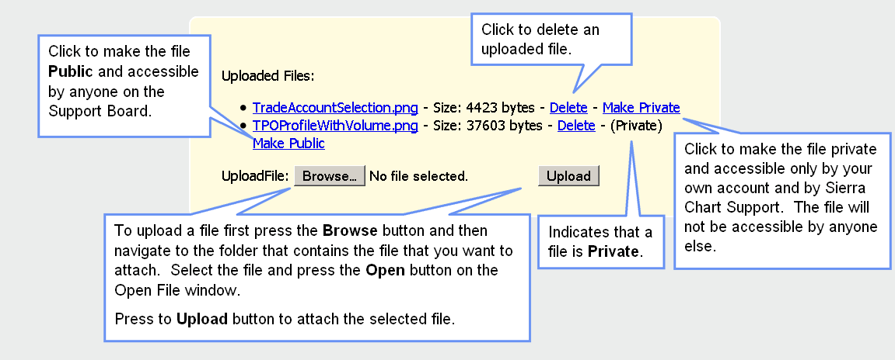

Support Board Posting Information
- ** How to Post a Message for Support **
- General Information
- How to Post Your Message Log
- Attaching or Posting a Screenshot/Image
- Attaching a File
- Providing Chartbook with Only a Single Chart
- Providing Lines From Trade Service Log
- Information About How Support Answers Messages
- Do Not Post Videos Unless Requested!
- Editing and Hiding a Post
How to Post a Message for Support
- If you need help with the Sierra Chart software, post a question on our Support Board. You most certainly will get a response from us as long as the question is within the domain of our support and policies. We are here to help within the bounds of our support policy. You can also post questions for general user discussion on our our Support Board as well. In this case they will be marked as a User Discussion, and after this we will not monitor the discussion thread any longer.
Support is provided by the engineers. For the fastest response, use this Support Board. Sending questions by e-mail, unless they require privacy, generally delays a response since the Support Board receives the highest attention for non-account related support. We use this Support Board because it allows us to manage questions in an efficient and organized way. - Account for Posting: The first step is that you need to have a Sierra Chart account and be logged into this account to be able to post on the Support Board.
- If you already have a Sierra Chart account, then proceed to Step 3 below. If you do not know the password for this account, then go to the Account Password Reset page. However, you can easily log into the account by selecting Help >> Support Board from within Sierra Chart.
- If you do not have a Sierra Chart account, then create a Sierra Chart Account. There is no charge for the account, no charge to use it to post on the Support Board, and it only takes seconds to create. Once you have an account and are logged in on the website, you will be able to post on the Support Board. This is the same account that you use to log in to Sierra Chart with.
- Optional: Search for the relevant documentation which should answer your question by using the Sierra Chart Site Search.
- Optional: Use the Support Board Search Function to look for your question and an answer before starting a new Support Request.
- Post Message: If you are not logged in, you will first be prompted to log in with your Sierra Chart Account Name and Password. For easy login from within Sierra Chart, if you are not already, select Help >> Support Board on the menu.
To post your message, click on the Start New Support Request link. Next, you will see a form which allows you to post a message and create a new Support Request on the board. You simply need to enter a short Title, enter your Message, and press the Submit button. That is it. - Response: You should receive an email notification to the e-mail address on your account when a response is made to your posting. Click the link within that message to view the response. Or to view your message on the board, the responses to it, and to post a follow up, go to the Support Board. Press your web browsers Reload button to update that page.
In the list of Titles on the Support Board, locate the title you have given your message and click on it. Messages from SC_SupportGroup are from Sierra Chart Support. Users may answer you as well. However, postings from users should not necessarily be relied upon. - Links to Documentation in Response: Sierra Chart support makes extensive use of linking to documentation in our responses. The Sierra Chart documentation is the master reference for the software and the Sierra Chart services. It very thoughtfully and thoroughly documents the software and is continuously reviewed and updated to ensure it is accurate, relevant and up-to-date.
When we link to a particular section in the documentation which is at a position on the page other than the top, browsers scroll to that position. However, some browsers do not always do this very well, such as Internet Explorer. So we recommend using browsers like Firefox, Opera or Chrome instead of Internet Explorer when reading responses on the Sierra Chart support board. - Follow up: If you have started a new Support Request, then view it as explained above and post responses within that same Support Request page. Do not start a New Support Request on the same subject.
- Privacy: The e-mail address you provide for your account is kept private. We do not ever disclose this information to anyone for any purpose.
General Information
The Sierra Chart Support Board is for Sierra Chart questions, issues, and suggestions. We handle all support through this board to maintain efficiency.
This board should also be used for discussion of custom study and system development between users. It can also be used for communication about Sierra Chart between users. For ease of use for all involved, we only maintain one public board.
Answers may not be provided for the following requests. Although we may respond to advise you of this.
- Questions from an account which is not directly paid to Sierra Chart. Some Sierra Chart accounts are provided through brokers or other resellers. These are not directly paid to us. We only provide help for these accounts if the question is basic or involves a problem with basic functionality.
Understand for those who do pay directly for Sierra Chart and pay a higher price, that they are entitled to receive more support. To obtain a direct account if you do not already have one, refer to Direct Account. - Questions from expired accounts. You need to pay for Usage Time for support.
- Questions that should be directed to your external Data or Trading service.
- Requests for new features or changes. We receive many feature requests, and we do consider what you are interested in. It is not productive or even feasible for us to be responding to every feature request. Some feature requestst take time to understand and it may be many months before they are more carefully reviewed. How long it would take to implement a new feature varies greatly. Sometimes we can do requests in hours, other times it can be many months. Requests for exotic studies and tools are not likely to be done unless there is sufficient demand. And we will not comment on these kinds of requests.
- Questions/Requests about custom studies that we did not develop or you desire.
- Problems that are not within the Sierra Chart software itself.
- Advanced, sophisticated, lengthy or complex questions that take a significant time or effort to comprehend and do not involve a software bug or an improvement. We are not here to provide advanced help for free unless it is deemed necessary or appropriate.
- Lengthy and long postings which have an excessive amount of communication and discussion which is completely unnecessary. These have a probability of being disregarded. Too much information is not helpful and can result in a disregarded request.
- Questions about something the software does not directly support.
- Programming help. Formula writing help. Advanced usage help. None of this is provided by Sierra Chart support unless we deem it is appropriate. These threads will be marked either as a User Discussion or as Programming Help. For an understanding of the perspective of Sierra Chart support on troubleshooting automated trading systems and in general study programming, refer to Troubleshooting Automated Trading System Behavior.
- Discussions between users.
- Questions about data differences between the various Data and Trading services. Do understand we are not the provider of the market data in many cases. And it has been proven, that time spent answering questions about market data and differences is generally unproductive for us.
- Excessive postings from a user.
- The question or request is not clear to us. We will not struggle with a request which is not clear. In these cases we may need to ask follow-up questions and make requests to the user until we are clear as to what the request is. We will not provide an answer until we are clear about the request. So unless you can clearly explain something to us, you may not get an answer.
- Excessive, complex or advanced questions from trial users. If you are a trial user we will only provide basic help within our discretion. If you have a lot of extensive questions, then you must have a paid account to receive help.
- It is essential to understand the perspective of Sierra Chart engineering on support. If you have a lot of questions or a question with a fair amount of complexity which may also involve various issues with external services and account configurations none of which we have any control over, then in general this is not within the scope of our support. Advanced questions take our time and have to be gradually understood by us and in general this is not within the scope of our support. Placing a burden on Sierra Chart support is a detriment to our user base because it takes away time from our development.
Sierra Chart Engineering, will transfer the burden on you if you present us with a complex request or question which is hard for us to understand and would take a lot of research on our part. We will need you to explain in more detail your request or question and to provide a proper basis for it. - This subsection explains the policy regarding review of Screenshots, text details, and other potentially intricate documents or media presentations. You need to understand our perspective on support. For the reasons that are explained in the Troubleshooting Automated Trading System Behavior section, we are not going to understand what you are doing as well as you do. We may have very little comprehension of it all. You need to understand that it takes a significant mind effort and time to truly understand some of the complex images we are presented with. In general these are largely disregarded by us. So if you ask us did you look at my screenshot, the answer is we had a quick look at it but if it is complex, then it is disregarded and we did not comprehend it. This is not within the scope of our support. You will first have to pay for our time at 150 USD per hour plus we would have to have an interest in this.
It is for these reasons, that if something you have done is complex or simply takes a significant time to understand it is not going to be reviewed or understood by us unless we think there is a very very good reason and usually this is not the case. There other standardized means that we have created for you to get the answer that you require and that may also involve you reading documentation or thinking about the solution to your problem based upon documented specifications of Sierra Chart. - Post Removal Rule: In some cases, if there are postings that are not constructive, and contain content which is incorrect or misleading and take our time to explain and defend, they may be removed. This usually is only done if the post has no other value and is not a support request or is not considered essential to respond to, or is coming from someone who is unnecessarily taking our time.
Sometimes this can happen based upon our experience with a particular user and the nature of that user, if the post lacks merit and unnecessarily takes our time for no value to either us or to the user.
For example, if there is a complaint about some problem but this is the result of a mistake the user has made with the use of Sierra Chart, a misunderstanding, a problem with an external service, a system issue including operating system issues, a programming error they have made, a problem with their alert formulas, or clearly untrue or nonsensical statements, and the time to analyze, explain and defend the situation is deemed not reasonable and not within the scope of our support, the post is subject to be removed.
In general it should be understood by you, that you cannot expect support beyond reason from us and we cannot allow our time to be taken unnecessarily by you on demand. We simply have no tolerance for this and will delete posts as necessary. - If in our response to you we have already provided a more than sufficient response and complete information either in the direct response, or in the linked documentation, we may not provide further information or responses, in response to further questions from you on the same subject.
In all of the above cases know your message has been read, wanted features are considered, and problems with the software will be corrected. You are most welcome to post messages about these subjects and to discuss these with other users. Your message may be replied to by other users. However, do not necessarily expect a response from Sierra Chart Support as these go beyond the standard support we provide.
We are primarily here on the support board to help with the basic use of the software and our services, discover issues that need to be resolved, and learn about reasonable improvements that can be made.
If you find a bug in Sierra Chart, then report it so it can be corrected. Otherwise, we may not be aware of it and it may not be corrected. When problems are reported, we immediately look into them and correct them promptly if a problem is found.
How to Post Your Message Log (Required In Some Cases)
 {kind=link}
{kind=link}
If you are having a problem doing something with Sierra Chart, then copy and paste the entire copy of the Sierra Chart Message Log into your email or Support Board message. If the Message Log is required, then support cannot help without the Message Log. Sending some of the lines is not helpful. The Message Log does not contain any private information. Follow these steps to provide us the Message Log:
- If the Message Log is not already open, then select Window >> Message Log on the menu to open it. If this still does not display the Message Log, then select Window >> Reset Windows and you will then see the Message Log window. If not, then select again Window >> Message Log on the menu.
- Press the Copy Log button on the Message Log window.
- Go to your e-mail message or your Support Board message. Point to the area where you type your message. Right-click your mouse. Select Paste on the menu to paste it into the message.
- If you want to privately send us your Message Log or you do not want to take up significant space in the support request page with a large Message Log, press the Send for Analysis button on the Message Log window. Type a very short text message about why you are sending a log and press Send. Let us know when you have done that by telling us through the Support Board, so we are aware that it has been received (See the note below). However, you still need to post your question on the Support Board.
If you are sending the Message Log by using the Send for Analysis button, you must let us know on the Support Board you have sent it this way at the time you send it. Otherwise, the Message Log will go unnoticed and you will not get the support you need. There have been instances where people have sent the Message Log to us this way expecting support from us and do not receive the support they need.
Attaching or Posting a Screenshot/Image (Optional)
You can also optionally post an image of the chart or of the main Sierra Chart window showing the problem or that you have a question about. Images can be posted in a Support Board message.
To upload the chart or the main Sierra Chart window image to the Support Board, you need to follow the steps given below.
Only use this method to provide chart images, and use no other method. If this method is not able to capture what you require, then another method can be used.
- Select Global Settings >> Customize Chart Header. Make sure the:
Symbol-Bar Period-Chart #, Date, and Time fields are added from the Available Header Fields list. Refer to the image below. - The first step is to simplify the chart by removing any chart Studies and Chart Drawings from drawing Tools which are not relevant to the issue being presented. If the chart image is too complicated and/or contains studies and drawings which are not relevant to the issue, there is a good chance it will be completely disregarded (the disregard rate is about 50%) and it will not be helpful to support. In general, provide the most simplest chart you can, if an image of a chart is requested.
If you do not want to affect your existing chart by removing the studies and Chart Drawings, you can duplicate it first with Chart >> Duplicate Chart and modify the duplicated chart. - Make sure both the price scale on the right side of the chart and the timescale of the bottom are visible. If they are not visible, the chart will be disregarded by Sierra Chart support. Therefore, select Chart >> Chart Settings >> Scale. Make sure Hide Values Scale and Hide Time Scale are unchecked.
- In the case of a chart, make sure Chart >> Show Rollover Dates is enabled.
- Select Chart >> Reset Scales to reset the scales of the chart.
- If you want to add text or arrow drawings on the chart to clarify what your question is about, use the Text and Arrow Drawing Tools for this.
- For the case of a chart window, in the Sierra Chart software select Edit >> Screen Images >> Upload Chart.
Or, select the Upload Main Window Image command if you want to include the entire main window. However, do not use this command if you only want to show the chart itself.
If you want the chart image to include any overlaid windows like the Trade Window, Time and Sales window, Market Depth window, or a Quote Board, then position those wwindows over the chart and select Edit >> Screen Images >> Upload Chart with Overlays.
For the case of a Trading DOM, select Chart >> Upload Chart with Overlays .
For more information, refer to the Image Upload Service documentation. - Within approximately 5 seconds you will notice a message box appear. Press Yes to copy the link of the uploaded chart or desktop image to the system clipboard.
- Go to your message on the Support Board, right-click in the area where you type your message and select the Paste command to paste the link.
Attaching a File (Optional)
To attach a file to a message on the Support Board:
 {kind=link}
{kind=link}
- Sierra Chart support may request you to attach files. These files are located in the Sierra Chart Data Files Folder folder on your system (\SierraChart\Data). To find the location of this folder, select Global Settings >> General Settings on the Sierra Chart menu. The folder is displayed in the box named: Data Files Folder.
- If support asks you for a Chartbook file, the file extension for these types of files is Cht. Support may ask you for a chartbook file for testing purposes. Do know that these Chartbooks do not contain any private information although your chart setups will be known, but we do not pay any attention to those other than for the purpose of diagnosing a problem. Generally we just need a chartbook with one or two charts to demonstrate a problem.
When you attach a Chartbook, it should be private by default, but if not you can set it to be private and only then can Sierra Chart support access it. - Another type of file that may be requested is called a Spreadsheet file. These are files created with File >> New Spreadsheet and also used by the Spreadsheet Study. These files have an extension .scss. These are also located in the Sierra Chart Data Files Folder on your system (\SierraChart\Data).
- Below the area on the Support Board where you are typing your message in reply to an existing posting or when you are starting a New Support Request, you will see a button named Add/Edit Attached Files. Press this button. This will open a new Upload Files pop-up web browser window. Keep in mind that it might appear on another monitor based upon your browser configuration. Refer to the images to the right.
- In the Upload Files window (see images to the right), press the Browse button and navigate to the folder that contains the file that you want to attach. Select the file and press the Open button on the Open File window.
- Press the Upload button to attach the requested file.
- It is possible to set an uploaded file as private, which will only make it available to you and to Sierra Chart support. To do this, click on the Make Private link for the relevant file.
- When you press the Submit / Submit New Reply button below the message box, the message will be posted along with the attachments.
Providing Chartbook with Only a Single Chart
Sometimes Sierra Chart support will request a Chartbook and we only need to see a single chart within that Chartbook.
In the case when only a single chart is needed, follow these instructions to provide that Chartbook. If you have been referred to this section, then follow these instructions because it is essential we get a Chartbook that is not complicated. Otherwise, the Chartbook you provide will be disregarded because we do not know where to look and we are overloaded with too much information to analyze.
- Select File >> New Chartbook.
- Go back to the original Chartbook which contains the chart that needs to be provided to support by selecting the Chartbook from the CB menu.
- Go to the particular chart that you need to provide to support. It can be accessed through the CW menu.
- Select Chart >> Duplicate Chart to Chartbook.
- Select the new Chartbook created from the list of Chartbooks.
- Press OK.
- Go to that new Chartbook through the CB menu.
- There should only be one chart now displayed. Go to that chart and select Analysis >> Studies.
- In the Chart Studies window, using the Remove button, remove all studies which are not relevant to the particular issue you need to communicate to Sierra Chart support. This must be done. Otherwise, Sierra Chart support may not look at the chart.
- Select File >> Save to save this new Chartbook.
- Follow the instructions to attach the Chartbook file to your Support Board posting. It can be privately attached.
Providing Lines From Trade Service Log
Follow the instructions below to provide the recent lines in the Trade Service Log to Sierra Chart support
- Make sure the Trade Service Log is enabled by checking to see that there is no check mark by Window >> Disable Visible Message Logging. If this option has been enabled, then the Trade Service Log at this time will be blank and contain no information. You will need to uncheck this option. In this case where there is no information in the Trade Service Log, you will need to use the Trade Activity Log instead.
- Open the Trade Service Log if it is not already open by selecting Trade >> Trade Service Log from the Sierra Chart main window menu. If it does not appear, then select Window >> Reset Windows and open it again with Trade >> Trade Service Log.
- Scroll to the very bottom of the Trade Service Log.
- Select the last line by left clicking on it.
- If you want to select additional lines, then press and hold the Shift key on your keyboard and then select a line above the last line. For example, 10 lines higher.
- Press the Copy Selection button.
- You can then paste the lines in the text area of your message by right clicking and selecting Paste on the displayed menu.
Information About How Support Answers Messages
Messages are replied to as soon as possible. Messages are categorized as easy, priority, and low priority. Messages are not necessarily answered in order. Easy messages and priority messages are answered first. Low priority and more difficult questions will be answered after.
You may see answers on a weekend to some easy questions and more difficult ones often will be left until Monday. In this case we are not ignoring you. Some messages may take more time to answer and cannot be answered promptly. However, if it appears to be a priority, we will at least post something brief so that you know that we are looking at it, unless your message falls into the category of something that may not be answered.
As we cannot respond to every single posting made. If you also make a posting for us within a thread where there is extensive discussion among users only, that probably will not even be seen by us.
As explained elsewhere on this page, we are not here on this Support Board to understand and respond to complex postings unless it is deemed necessary. We are not here to respond to excessive postings from a single user. If we deem postings for us as being abusive, we may not be able to provide you support for those postings. We will always help with basic operational issues that are within our control to help with. Our goal is to provide reliable software with features that you need and provide the basic help to use it.
Do Not Post Videos Unless Requested!
Do not provide videos to Sierra Chart support unless Sierra Chart support specifically requests them which is very rare.
Videos are not acceptable to us because generally they are often very hard to understand for the following reasons. Videos will not be looked at as a matter of policy in most cases and usually you are unnecessarily taking your time by providing them.
- Poor resolution.
- Excessive amount of windows and other information displayed causing information overload preventing us from understanding what it is you want us to look at and causing confusion.
- The necessary information we need is not displayed. For example, we may need to see the Sierra Chart Message Log and that needs to be provided in its entirety and in a text format. Not through a poor resolution video where we are stressing to see something which is too small and unclear.
- No audio. This is not necessarily a problem but it is if there is no text narrative.
- Demonstrating something too quickly. The pace at which we need to analyze a problem is variable. A video runs at a constant and often fast-paced speed which is unlikely to be at the rate to analyze the problem. Even though it can be paused, this is a difficult and repetitive process. It can be difficult to pause, rewind and continue from a particular point and repeat this process over and over again especially when events are happening quickly and not clearly.
- Demonstrating something that may be obvious to the user, but not obvious to Sierra Chart support primarily due to information overload with the amount of content within the video. Therefore, it takes time for us to comprehend a problem. With a text description and static images, we can look at a problem and gradually understand it at the appropriate pace. Whereas a video moves along at a pace which may be too fast and also presenting a lot of unneeded information.
Even though the video could be paused, still this can be a frustrating process to be working with a moving video. Along a video timeline, we may have to randomly jump around to find exactly what we are looking for. This is inefficient and frustrating. - Presenting a lot of excessive and unrelated information. This can be the case if you link to a video that you did not develop for the specific support request.
- We are not able to see the related settings like Chart and Study settings, and interact with Sierra Chart in order to understand an issue, or accomplish a particular task. So essentially in this case, video is next to useless to us.
In conclusion we do not accept videos and rarely will we spend the time looking at them.
Editing and Hiding a Post
You are able to edit or hide a Support Request / Thread that you have started on the Support Board. A thread on the Support Board is another name for a page for a single Support Request.
You can edit or hide any posting that you have made in any thread on the Support Board.
At the bottom right of a post on the Support Board, use the Edit link to edit the post. If you want to completely remove the posting, just edit it to a single "." character.
At the bottom right of a post on the Support Board, use the Hide link to hide the post.
Use the Hide button at the top of the message thread to hide the entire thread.
*Last modified Friday, 16th June, 2023.